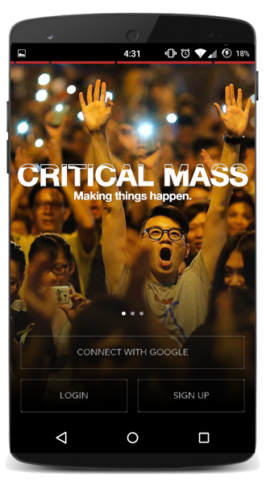
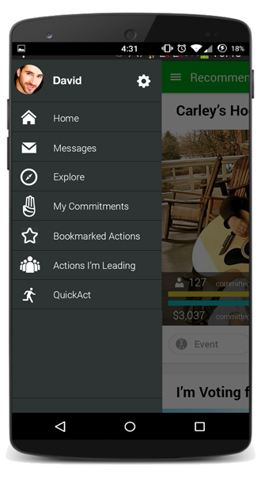
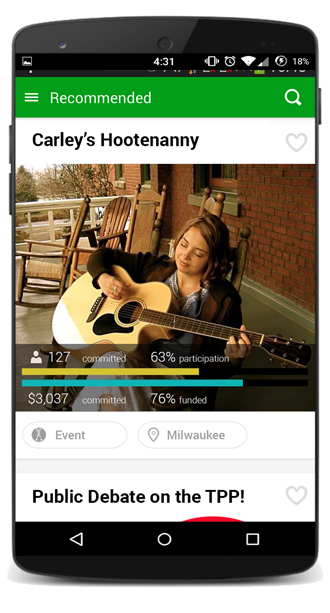

Critical Mass
Social Mobilization App




Critical Mass is a mobile app for crowdsourcing attendance, participation and funding using empirically-validated behavioral modification techniques such as “Ulysses Pacts” and social media accountability to help users drive their own participation.
The app aims to give “present you” some effective tools for causing “future you” to show up, participate in and/or fund the projects that you care about. Ultimately, the project aims to use controlled experiments within the user population to determine the validity of various models of self-directed behavior modification.
Project Credits
In collaboration
with Morgan Starkey
and Alexander Tepper